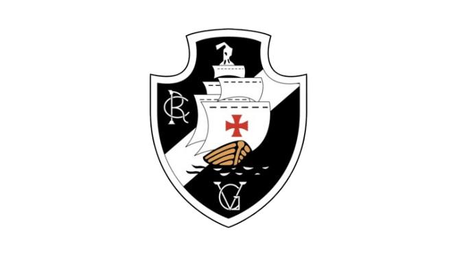

Clube de Regatas Vasco da Gama
O Clube de Regatas Vasco da Gama, que recebeu esse nome em homenagem ao histórico navegador português, foi criado, a princípio, em função da prática do remo, mas foi com o futebol que se estabeleceu definitivamente no século XX. Atualmente, o impacto do Vasco na cultura carioca é tão grande que, em 2007, foi criado o “Dia do Vasco” em homenagem ao clube.
Fundado em 1898, na cidade do Rio de Janeiro, o clube ganhou seu nome em homenagem ao navegador português Vasco da Gama. As cores escolhidas para simbolizar o clube foram o preto, o branco e o vermelho, estilizados na cruz de malta, símbolo do time. Foi apenas em 1916 que o Vasco passou a integrar o futebol carioca, estreando na terceira divisão do campeonato e, já em 1923, figurava na divisão principal.
Sobre o Clube
O estádio vascaíno é o famoso “São Januário” que, fundado em 21 de abril de 1927, tem capacidade atual de abrigar 15.150 torcedores. O uniforme principal utilizado atualmente é camisa preta com lista branca na diagonal frontal, com o símbolo da cruz de malta, acompanhada por short preto e meia listrada em preto e branco. O segundo uniforme é o mesmo, porém com as cores invertidas: camisa branca com lista preta na diagonal, com o símbolo da cruz de malta, acompanhada por short branco e meia listrada em preto e branco.
Títulos do Vasco
- Copa Libertadores da América: 1998;
- Copa Mercosul: 2000;
- Campeonato Sul-americano de Campeões: 1948;
- Campeonato Brasileiro: 1974, 1989, 1997 e 2000;
- Copa do Brasil: 2011;
- Campeonatos Estaduais (Carioca): 1923, 1924, 1929, 1934, 1936, 1945, 1947, 1949, 1950, 1952, 1956, 1958, 1970, 1977, 1982, 1987, 1988, 1992, 1993, 1994, 1998, 2003, 2015 e 2016;
- Campeonato Carioca série B: 1922;
- Taça Guanabara: 1965, 1976, 1977, 1986, 1987, 1990, 1992, 1994, 1998, 2000, 2003, 2016 e 2019;
- Taça Rio: 1984, 1988, 1992, 1993, 1998, 1999, 2001, 2003, 2004, 2017 e 2021;
- Copas Rio de Janeiro: 1992 e 1993;
- Torneios Municipais: 1944, 1945, 1946 e 1947;
- Torneios Início: 1926, 1929, 1930, 1931, 1932, 1942, 1944, 1945, 1948 e 1958;
- Campeonato Brasileiro série B: 2009;
- Torneio Rio-São Paulo: 1958, 1966 e 1999.